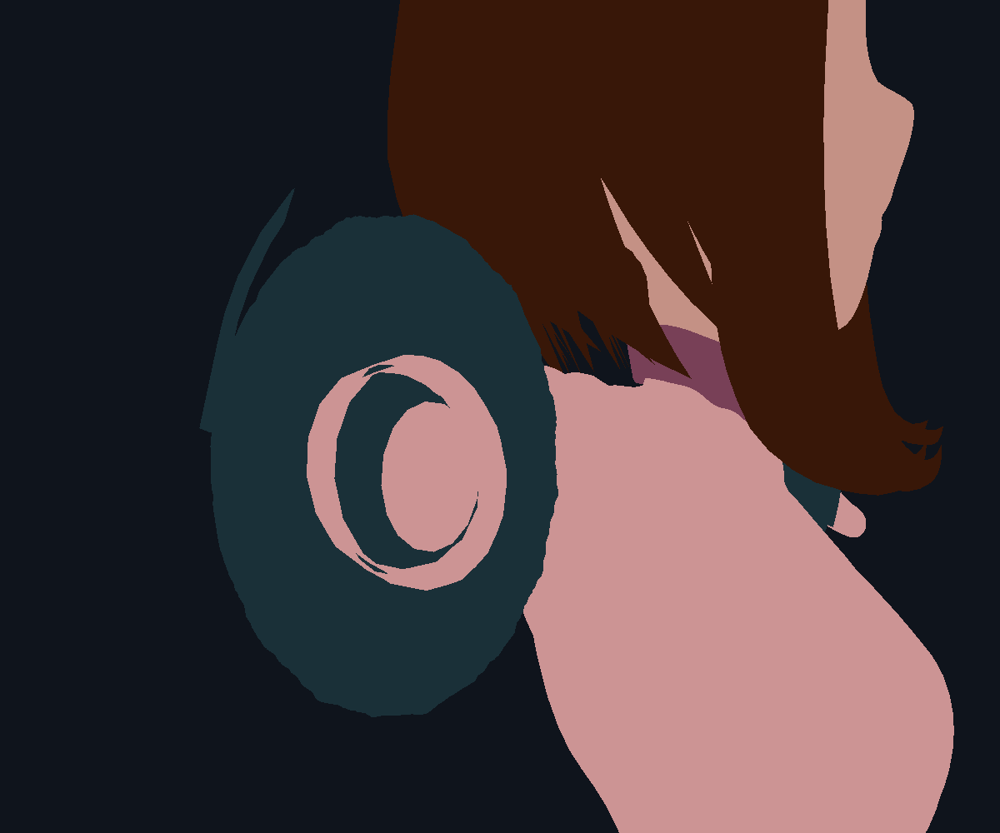
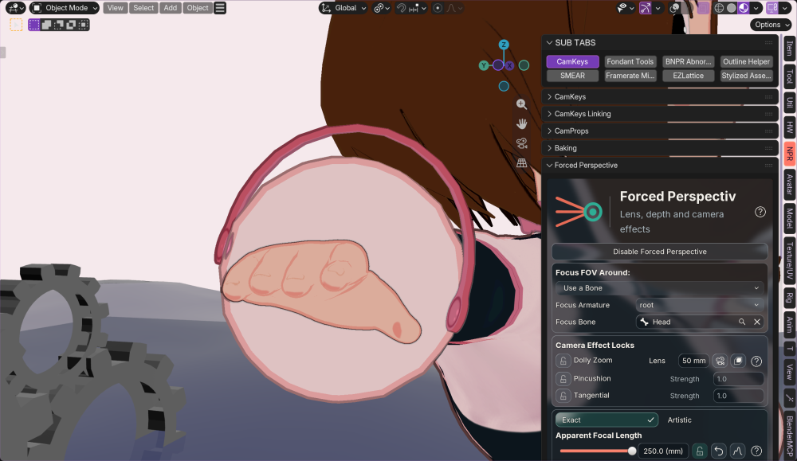

Lower-lens teeth: diagnosis, not a shipped repair


More deformation samples greatly reduce the teeth, but subdividing everything is too costly. This diagnostic is not installed. Intentional convex-hull outline slivers are unchanged.
Available in Exact and Artistic again. Ordinary camera clipping follows deformation.

All seven modifiers read full protection at 250 mm. User view retained; scene not saved.

More deformation samples greatly reduce the teeth, but subdividing everything is too costly. This diagnostic is not installed. Intentional convex-hull outline slivers are unchanged.
14 registered runtime and geometry checks pass on every Blender release family 4.2–5.2. Windows physical replay remains open. No renderer/backend changes, no release version bumps.
Details and remaining choice · EvidenceKept crossing faces, a rear margin and three neighboring face loops. Discarded 23,624 farther-behind triangles from draw indices. The Metal image is pixel-identical: zero changed channels, teeth still present. No production pruning pass was installed; natural clipping already rejects those pieces.
Measured result